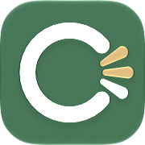

CueSwiftUI
タスクの「期限」だけではなく「いつから」「いつまでに」やるかを管理できるToDoアプリ。
iPhoneのアプリとちょっとしたツールを作っています。

CueSwiftUIタスクの「期限」だけではなく「いつから」「いつまでに」やるかを管理できるToDoアプリ。
ファンレター、番組へのメール投稿、残しておきたい会話など、推し活関連のテキストを記録し、統計で振り返るメモアプリ。
Claude Code がサブエージェントを動かすたびに残す記録を読み、LLM もネットワークも使わずに、エージェントの実際の振る舞いを集計して報告するコマンドラインツール。